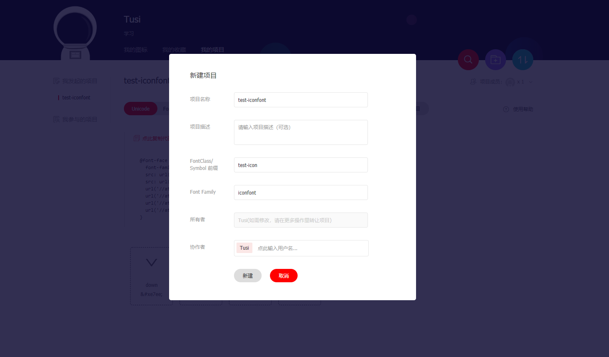
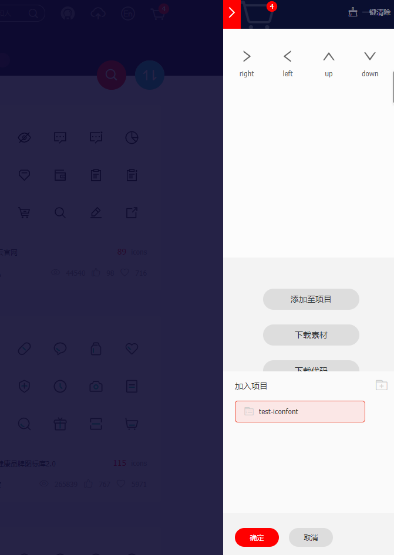
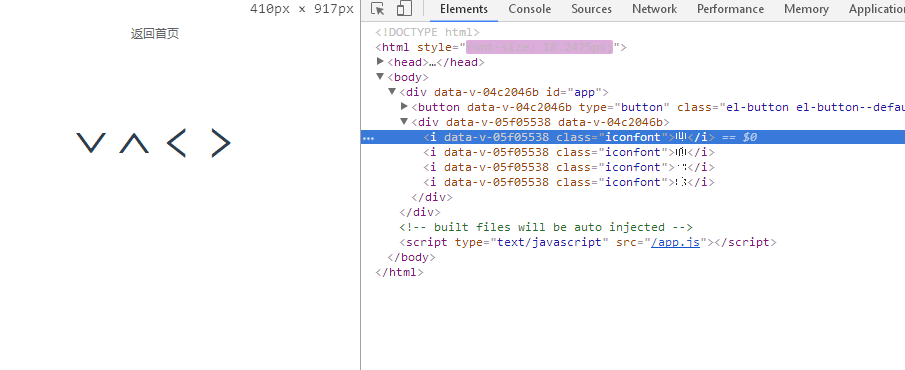
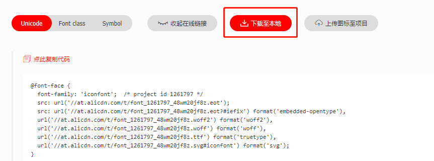
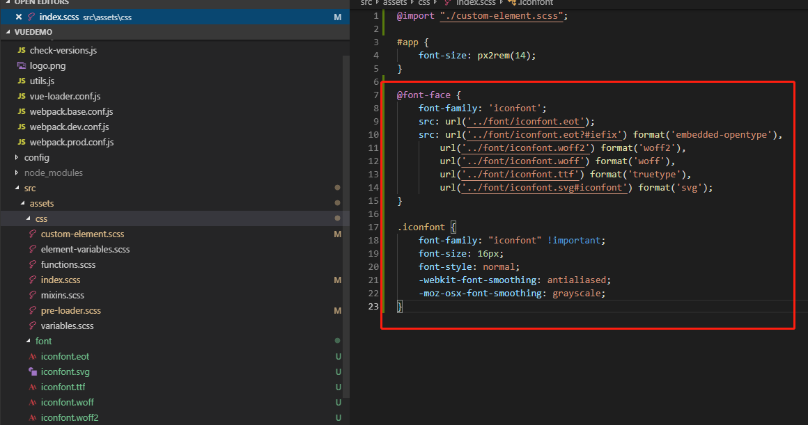
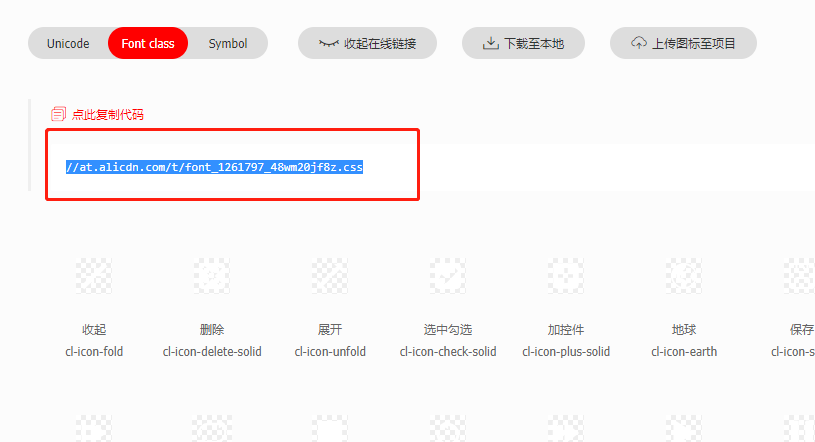
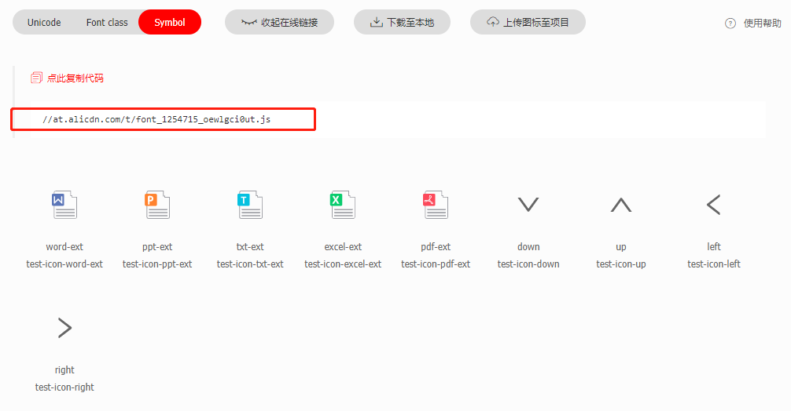
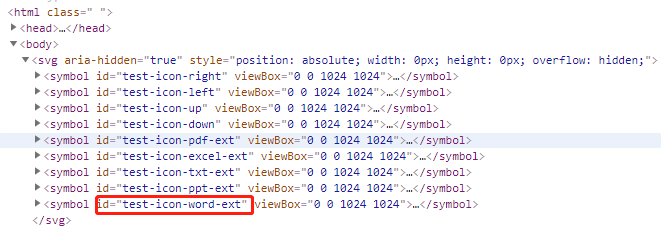
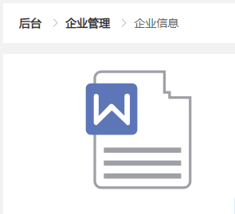
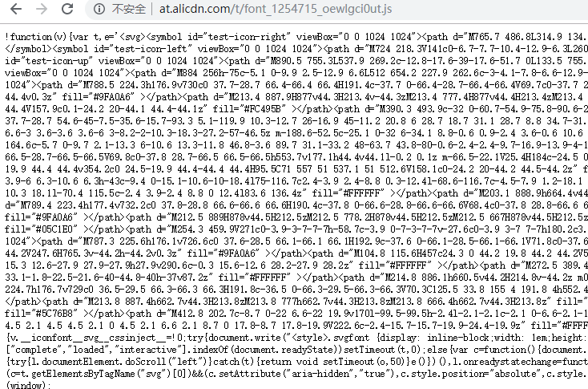

对于前端而言，图标的发展可谓日新月异。从img标签，到雪碧图，再到字体图标，svg，甚至svg也有了类似于雪碧图的方案svg-sprite-loader。雪碧图没有什么好讲的了，只是简单地利用了background-position来做图标定位。今天咱们先聊聊怎么使用字体图标和svg图标。其实字体图标也不陌生了，bootstrap，font-awesome，element-ui等UI库都基本标配了字体图标。
unicode预留了E000-F8FF范围作为私有保留区域，这个区间的unicode码非常适合做字体图标，前端根据unicode码就能显示对应的图标。

注：这里修正一下，前缀应该是test-icon-。

index.scss中引入在线字体@font-face {
font-family: 'iconfont'; /* project id 1254715 */
src: url('//at.alicdn.com/t/font_1254715_s1khj1whikd.eot');
src: url('//at.alicdn.com/t/font_1254715_s1khj1whikd.eot?#iefix') format('embedded-opentype'),
url('//at.alicdn.com/t/font_1254715_s1khj1whikd.woff2') format('woff2'),
url('//at.alicdn.com/t/font_1254715_s1khj1whikd.woff') format('woff'),
url('//at.alicdn.com/t/font_1254715_s1khj1whikd.ttf') format('truetype'),
url('//at.alicdn.com/t/font_1254715_s1khj1whikd.svg#iconfont') format('svg');
}页面中使用
使用时很不友好，使用的是unicode码表示，使用图标还必须去iconfont项目去查询下unicode码。
<template>
<div>
<i class="iconfont"></i>
<i class="iconfont"></i>
<i class="iconfont"></i>
<i class="iconfont"></i>
</div>
</template>效果图如下：

有时候网络不是那么给力的，或者是内网环境，那么就不要考虑用在线引用的方式了。

在全局样式文件中定义如下代码
@font-face {
font-family: "iconfont";
src: url('../fonts/iconfont.eot'); /* IE9*/
src: url('../fonts/iconfont.eot#iefix') format('embedded-opentype'), /* IE6-IE8 */
url('../fonts/iconfont.woff') format('woff'), /* chrome, firefox */
url('../fonts/iconfont.woff2') format('woff2'), /* chrome, firefox */
url('../fonts/iconfont.ttf') format('truetype'), /* chrome, firefox, opera, Safari, Android, iOS 4.2+*/
url('../assets/fonts/iconfont.svg#iconfont') format('svg'); /* iOS 4.1- */
}
.iconfont {
font-family: "iconfont" !important;
font-size: 16px;
font-style: normal;
-webkit-font-smoothing: antialiased;
-moz-osx-font-smoothing: grayscale;
}
使用方式
与在线引用方式是一样的，都是使用unicode码去展示图标。
<template>
<i class="iconfont"></i>
</template>ie6+，及所有现代浏览器。一种更友好的封装，类似于font-awesome，我们只要使用class，就可以调用图标了。其原理就是利用before伪元素来显示图标。
超级简单，只要在线生成代码，引用在线的css文件即可使用。

在index.html中引用它。
<link rel="stylesheet" href="//at.alicdn.com/t/font_1261797_48wm20jf8z.css">项目中就可以使用字体图标了。
<template>
<i class="iconfont cl-icon-fold"></i>
<i class="iconfont cl-icon-delete-solid"></i>
</template>与unicode方式类似，下载代码到本地。因为我是用scss管理样式的，需要在下载的代码中提取出关键部分。除了引用字体库，还要将其中的iconfont.css中定义的before伪元素全部复制到自己的scss文件中。
@font-face {
font-family: "iconfont";
src: url('../fonts/iconfont.eot'); /* IE9*/
src: url('../fonts/iconfont.eot#iefix') format('embedded-opentype'), /* IE6-IE8 */
url('../fonts/iconfont.woff') format('woff'), /* chrome, firefox */
url('../fonts/iconfont.woff2') format('woff2'), /* chrome, firefox */
url('../fonts/iconfont.ttf') format('truetype'), /* chrome, firefox, opera, Safari, Android, iOS 4.2+*/
url('../assets/fonts/iconfont.svg#iconfont') format('svg'); /* iOS 4.1- */
}
.iconfont {
font-family: "iconfont" !important;
font-size: 16px;
font-style: normal;
-webkit-font-smoothing: antialiased;
-moz-osx-font-smoothing: grayscale;
}
// 列了一部分举例
.cl-icon-user:before {
content: "\e64b";
}
.cl-icon-video:before {
content: "\e66b";
}
.cl-icon-pause:before {
content: "\e7bd";
}
.cl-icon-orgnazation:before {
content: "\e61b";
}ie8+，及所有现代浏览器。unicode语意明确，书写更直观。可以很容易分辨这个icon是什么。class来定义图标，所以当要替换图标时，只需要修改class里面的unicode引用。由于加了新的图标需要重新在iconfont.cn重新生成代码，所以这种方式也不算很方便，但是相对于unicode还是高级不少。根据我的经验，建议在调试时，不要每次图标更新，就下载到本地更换。应该先使用在线使用的方式，调试完毕确认无误后，再下载到本地使用，这样对于效率提升有很大帮助。
svg的symbol提供了类似于雪碧图的功能，让svg的使用变得更简单，也可以满足做图标系统的需求。可以参考张大大博客了解更多关于svg symbol的知识。
首先在iconfont项目中选择symbol方式，并在线生成js代码

然后在index.html中引入这个js文件
<script src="//at.alicdn.com/t/font_1254715_oewlgci0ut.js"></script>这个js的作用是在文档中生成svg symbol

最后就可以在页面中通过use标签使用svg图标了。xlink:href的值设置为对应的symbol的id即可。
<svg aria-hidden="true">
<use xlink:href="#test-icon-word-ext"></use>
</svg>效果如下：

多色图标还是酷！
本地使用也是一样的道理，主要是依赖这个在线生成的js文件，将在线js文件的链接在浏览器空标签中打开，就可以得到其内容，然后复制内容，自己命名一个js文件，并把它放在本地项目静态资源目录下，引用即可。

<script src="./static/js/symbols.js"></script>即使使用了symbol方式，当设计小姐姐新增图标时，我们还是无法避免重新生成图标代码。那么有没有更优雅的解决方案呢？答案是有的。svg-sprite-loader + require.context。
svg-sprite-loader网上已经有太多文章了。
关于require.context，我倒是有一点自己的理解。请查看一张图带你了解webpack的require.context。
css属性进行定制。ie9+,及现代浏览器。svg的性能一般，还不如png。